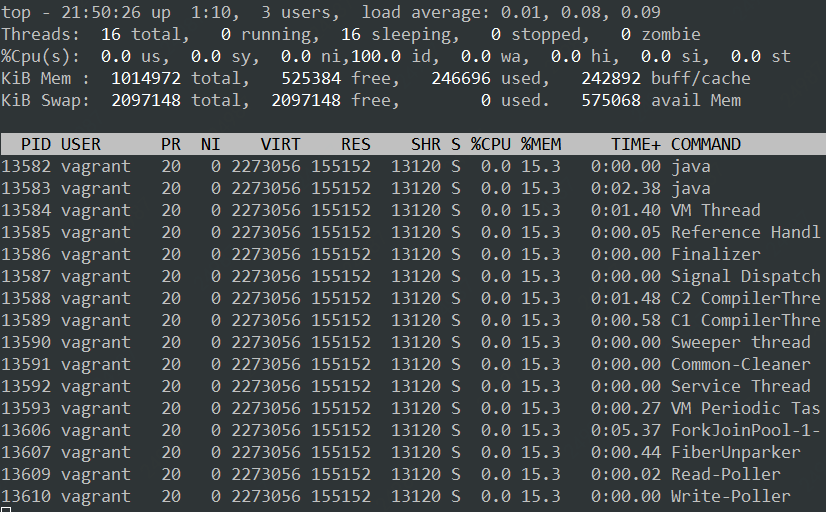

- 00 学习攻略 如何才能学好并发编程？.md
- 00 开篇词 你为什么需要学习并发编程？.md
- 01 可见性、原子性和有序性问题：并发编程Bug的源头.md
- 02 Java内存模型：看Java如何解决可见性和有序性问题.md
- 03 互斥锁（上）：解决原子性问题.md
- 04 互斥锁（下）：如何用一把锁保护多个资源？.md
- 05 一不小心就死锁了，怎么办？.md
- 06 用“等待-通知”机制优化循环等待.md
- 07 安全性、活跃性以及性能问题.md
- 08 管程：并发编程的万能钥匙.md
- 09 Java线程（上）：Java线程的生命周期.md
- 10 Java线程（中）：创建多少线程才是合适的？.md
- 11 Java线程（下）：为什么局部变量是线程安全的？.md
- 12 如何用面向对象思想写好并发程序？.md
- 13 理论基础模块热点问题答疑.md
- 14 Lock和Condition（上）：隐藏在并发包中的管程.md
- 15 Lock和Condition（下）：Dubbo如何用管程实现异步转同步？.md
- 16 Semaphore：如何快速实现一个限流器？.md
- 17 ReadWriteLock：如何快速实现一个完备的缓存？.md
- 18 StampedLock：有没有比读写锁更快的锁？.md
- 19 CountDownLatch和CyclicBarrier：如何让多线程步调一致？.md
- 20 并发容器：都有哪些“坑”需要我们填？.md
- 21 原子类：无锁工具类的典范.md
- 22 Executor与线程池：如何创建正确的线程池？.md
- 23 Future：如何用多线程实现最优的“烧水泡茶”程序？.md
- 24 CompletableFuture：异步编程没那么难.md
- 25 CompletionService：如何批量执行异步任务？.md
- 26 Fork_Join：单机版的MapReduce.md
- 27 并发工具类模块热点问题答疑.md
- 28 Immutability模式：如何利用不变性解决并发问题？.md
- 29 Copy-on-Write模式：不是延时策略的COW.md
- 3 个用户来信 打开一个新的并发世界.md
- 30 线程本地存储模式：没有共享，就没有伤害.md
- 31 Guarded Suspension模式：等待唤醒机制的规范实现.md
- 32 Balking模式：再谈线程安全的单例模式.md
- 33 Thread-Per-Message模式：最简单实用的分工方法.md
- 34 Worker Thread模式：如何避免重复创建线程？.md
- 35 两阶段终止模式：如何优雅地终止线程？.md
- 36 生产者-消费者模式：用流水线思想提高效率.md
- 37 设计模式模块热点问题答疑.md
- 38 案例分析（一）：高性能限流器Guava RateLimiter.md
- 39 案例分析（二）：高性能网络应用框架Netty.md
- 40 案例分析（三）：高性能队列Disruptor.md
- 41 案例分析（四）：高性能数据库连接池HiKariCP.md
- 42 Actor模型：面向对象原生的并发模型.md
- 43 软件事务内存：借鉴数据库的并发经验.md
- 44 协程：更轻量级的线程.md
- 45 CSP模型：Golang的主力队员.md
- 用户来信 真好，面试考到这些并发编程，我都答对了！.md
- 结束语 十年之后，初心依旧.md
33 Thread-Per-Message模式：最简单实用的分工方法
我们曾经把并发编程领域的问题总结为三个核心问题：分工、同步和互斥。其中，同步和互斥相关问题更多地源自微观，而分工问题则是源自宏观。我们解决问题，往往都是从宏观入手，在编程领域，软件的设计过程也是先从概要设计开始，而后才进行详细设计。同样，解决并发编程问题，首要问题也是解决宏观的分工问题。
并发编程领域里，解决分工问题也有一系列的设计模式，比较常用的主要有Thread-Per-Message模式、Worker Thread模式、生产者-消费者模式等等。今天我们重点介绍Thread-Per-Message模式。
如何理解Thread-Per-Message模式
现实世界里，很多事情我们都需要委托他人办理，一方面受限于我们的能力，总有很多搞不定的事，比如教育小朋友，搞不定怎么办呢？只能委托学校老师了；另一方面受限于我们的时间，比如忙着写Bug，哪有时间买别墅呢？只能委托房产中介了。委托他人代办有一个非常大的好处，那就是可以专心做自己的事了。
在编程领域也有很多类似的需求，比如写一个HTTP Server，很显然只能在主线程中接收请求，而不能处理HTTP请求，因为如果在主线程中处理HTTP请求的话，那同一时间只能处理一个请求，太慢了！怎么办呢？可以利用代办的思路，创建一个子线程，委托子线程去处理HTTP请求。
这种委托他人办理的方式，在并发编程领域被总结为一种设计模式，叫做Thread-Per-Message模式，简言之就是为每个任务分配一个独立的线程。这是一种最简单的分工方法，实现起来也非常简单。
用Thread实现Thread-Per-Message模式
Thread-Per-Message模式的一个最经典的应用场景是网络编程里服务端的实现，服务端为每个客户端请求创建一个独立的线程，当线程处理完请求后，自动销毁，这是一种最简单的并发处理网络请求的方法。
网络编程里最简单的程序当数echo程序了，echo程序的服务端会原封不动地将客户端的请求发送回客户端。例如，客户端发送TCP请求”Hello World”，那么服务端也会返回”Hello World”。
下面我们就以echo程序的服务端为例，介绍如何实现Thread-Per-Message模式。
在Java语言中，实现echo程序的服务端还是很简单的。只需要30行代码就能够实现，示例代码如下，我们为每个请求都创建了一个Java线程，核心代码是：new Thread(()->{…}).start()。
final ServerSocketChannel =
ServerSocketChannel.open().bind(
new InetSocketAddress(8080));
//处理请求
try {
while (true) {
// 接收请求
SocketChannel sc = ssc.accept();
// 每个请求都创建一个线程
new Thread(()->{
try {
// 读Socket
ByteBuffer rb = ByteBuffer
.allocateDirect(1024);
sc.read(rb);
//模拟处理请求
Thread.sleep(2000);
// 写Socket
ByteBuffer wb =
(ByteBuffer)rb.flip();
sc.write(wb);
// 关闭Socket
sc.close();
}catch(Exception e){
throw new UncheckedIOException(e);
}
}).start();
}
} finally {
ssc.close();
}
如果你熟悉网络编程，相信你一定会提出一个很尖锐的问题：上面这个echo服务的实现方案是不具备可行性的。原因在于Java中的线程是一个重量级的对象，创建成本很高，一方面创建线程比较耗时，另一方面线程占用的内存也比较大。所以，为每个请求创建一个新的线程并不适合高并发场景。
于是，你开始质疑Thread-Per-Message模式，而且开始重新思索解决方案，这时候很可能你会想到Java提供的线程池。你的这个思路没有问题，但是引入线程池难免会增加复杂度。其实你完全可以换一个角度来思考这个问题，语言、工具、框架本身应该是帮助我们更敏捷地实现方案的，而不是用来否定方案的，Thread-Per-Message模式作为一种最简单的分工方案，Java语言支持不了，显然是Java语言本身的问题。
Java语言里，Java线程是和操作系统线程一一对应的，这种做法本质上是将Java线程的调度权完全委托给操作系统，而操作系统在这方面非常成熟，所以这种做法的好处是稳定、可靠，但是也继承了操作系统线程的缺点：创建成本高。为了解决这个缺点，Java并发包里提供了线程池等工具类。这个思路在很长一段时间里都是很稳妥的方案，但是这个方案并不是唯一的方案。
业界还有另外一种方案，叫做轻量级线程。这个方案在Java领域知名度并不高，但是在其他编程语言里却叫得很响，例如Go语言、Lua语言里的协程，本质上就是一种轻量级的线程。轻量级的线程，创建的成本很低，基本上和创建一个普通对象的成本相似；并且创建的速度和内存占用相比操作系统线程至少有一个数量级的提升，所以基于轻量级线程实现Thread-Per-Message模式就完全没有问题了。
Java语言目前也已经意识到轻量级线程的重要性了，OpenJDK有个Loom项目，就是要解决Java语言的轻量级线程问题，在这个项目中，轻量级线程被叫做Fiber。下面我们就来看看基于Fiber如何实现Thread-Per-Message模式。
用Fiber实现Thread-Per-Message模式
Loom项目在设计轻量级线程时，充分考量了当前Java线程的使用方式，采取的是尽量兼容的态度，所以使用上还是挺简单的。用Fiber实现echo服务的示例代码如下所示，对比Thread的实现，你会发现改动量非常小，只需要把new Thread(()->{…}).start()换成 Fiber.schedule(()->{})就可以了。
final ServerSocketChannel ssc =
ServerSocketChannel.open().bind(
new InetSocketAddress(8080));
//处理请求
try{
while (true) {
// 接收请求
final SocketChannel sc =
ssc.accept();
Fiber.schedule(()->{
try {
// 读Socket
ByteBuffer rb = ByteBuffer
.allocateDirect(1024);
sc.read(rb);
//模拟处理请求
LockSupport.parkNanos(2000*1000000);
// 写Socket
ByteBuffer wb =
(ByteBuffer)rb.flip()
sc.write(wb);
// 关闭Socket
sc.close();
} catch(Exception e){
throw new UncheckedIOException(e);
}
});
}//while
}finally{
ssc.close();
}
那使用Fiber实现的echo服务是否能够达到预期的效果呢？我们可以在Linux环境下做一个简单的实验，步骤如下：
- 首先通过
ulimit -u 512将用户能创建的最大进程数（包括线程）设置为512； - 启动Fiber实现的echo程序；
- 利用压测工具ab进行压测：ab -r -c 20000 -n 200000 http://测试机IP地址:8080/
压测执行结果如下：
Concurrency Level: 20000
Time taken for tests: 67.718 seconds
Complete requests: 200000
Failed requests: 0
Write errors: 0
Non-2xx responses: 200000
Total transferred: 16400000 bytes
HTML transferred: 0 bytes
Requests per second: 2953.41 [#/sec] (mean)
Time per request: 6771.844 [ms] (mean)
Time per request: 0.339 [ms] (mean, across all concurrent requests)
Transfer rate: 236.50 [Kbytes/sec] received
Connection Times (ms)
min mean[+/-sd] median max
Connect: 0 557 3541.6 1 63127
Processing: 2000 2010 31.8 2003 2615
Waiting: 1986 2008 30.9 2002 2615
Total: 2000 2567 3543.9 2004 65293
你会发现即便在20000并发下，该程序依然能够良好运行。同等条件下，Thread实现的echo程序512并发都抗不过去，直接就OOM了。
如果你通过Linux命令 top -Hp pid 查看Fiber实现的echo程序的进程信息，你可以看到该进程仅仅创建了16（不同CPU核数结果会不同）个操作系统线程。

如果你对Loom项目感兴趣，也想上手试一把，可以下载源代码自己构建，构建方法可以参考Project Loom的相关资料，不过需要注意的是构建之前一定要把代码分支切换到Fibers。
总结
并发编程领域的分工问题，指的是如何高效地拆解任务并分配给线程。前面我们在并发工具类模块中已经介绍了不少解决分工问题的工具类，例如Future、CompletableFuture 、CompletionService、Fork/Join计算框架等，这些工具类都能很好地解决特定应用场景的问题，所以，这些工具类曾经是Java语言引以为傲的。不过这些工具类都继承了Java语言的老毛病：太复杂。
如果你一直从事Java开发，估计你已经习以为常了，习惯性地认为这个复杂度是正常的。不过这个世界时刻都在变化，曾经正常的复杂度，现在看来也许就已经没有必要了，例如Thread-Per-Message模式如果使用线程池方案就会增加复杂度。
Thread-Per-Message模式在Java领域并不是那么知名，根本原因在于Java语言里的线程是一个重量级的对象，为每一个任务创建一个线程成本太高，尤其是在高并发领域，基本就不具备可行性。不过这个背景条件目前正在发生巨变，Java语言未来一定会提供轻量级线程，这样基于轻量级线程实现Thread-Per-Message模式就是一个非常靠谱的选择。
当然，对于一些并发度没那么高的异步场景，例如定时任务，采用Thread-Per-Message模式是完全没有问题的。实际工作中，我就见过完全基于Thread-Per-Message模式实现的分布式调度框架，这个框架为每个定时任务都分配了一个独立的线程。
课后思考
使用Thread-Per-Message模式会为每一个任务都创建一个线程，在高并发场景中，很容易导致应用OOM，那有什么办法可以快速解决呢？
欢迎在留言区与我分享你的想法，也欢迎你在留言区记录你的思考过程。感谢阅读，如果你觉得这篇文章对你有帮助的话，也欢迎把它分享给更多的朋友。
© 2019 - 2023 Liangliang Lee. Powered by gin and hexo-theme-book.